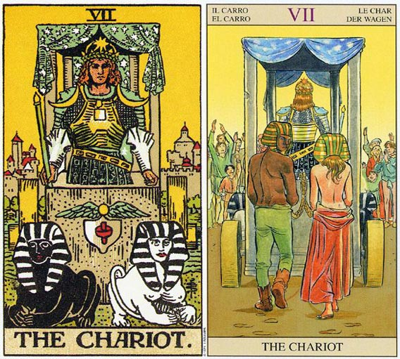

塔罗牌战车（The Chariot）解释
相关语：胜利 对应星象：人马座
战车牌意味训练有素的心智。战车 THE CHARIOT 代表由于坚持而成功，也产意味着你对宿命正以理智，坚持抗拒旧传统。逆位的代表被积压的情绪蒙闭、需要创新去突破旧传统。
一名武士站在战车上，右手拿着一根绳子或权杖，肩膀上则有两枚蓝色的月亮。战车的蓬盖上缀满了星星，而腰带上则展示着黄道十二宫的各种符号。战车部分停在水中，部分停在陆地。武士的前方有两尊狮身人面兽，一黑一白，正好与女教皇牌上的柱子相呼应。
战车前方长着翅膀的圆盘是爱希斯（Isis）的代表符号，这位埃及神话中的女神是魔力和母亲的守护神，并且是位身具怜悯心的女神。这个有翅膀的圆盘描述的事，精神的力量足以凌驾情感之上。它代表在遇上与情感有关的事件时，得以保持清晰的思路。
狮身人面像代表他生命中互相对立的力量，这些力量需要他运用他的意志力来控制。如果他没有发挥自己的意志的话，两尊狮身人面兽可能会朝着相反的方向前进，而使他的战车撕裂成两半（其他塔罗牌中的狮身人面兽是背对背的，而且各自决定自己的方向）。他可以走向水中、陆地，或者说可以走进情感和现实的世界。他若能驾驭这两只狮身人面兽，就能控制自己的本能的欲望。
这个男人是前面所有牌的总结，而且他一定不能放弃，必须继续朝着世界牌前进。和所有塔罗牌的七一样，“不要放弃”是关键课题。
他带着愚人的权杖，身后有取自女教皇的布幔，盔甲是来自皇帝，狮身人面兽显示恋人的二元性，而衣服上的埃及符号则表示在教皇牌中的学习的过程。
战车代表占星学上的巨蟹座，尤其是如果伴随月亮或任何圣杯的宫廷牌。巨蟹座的课题之一，便是学习运用理智来控制或锻炼感情。在皇帝牌中你否定自己的情感，而在战车牌终你就需要去接受它们存在的事实，并以理智去驯服它们。
战车（The Chariot）牌面解读
这张牌描绘的是克服障碍、获得胜利的王者战车。牌面上的胜利者以一种强有力的姿态站在战车上，展现他在人世间的丰功伟业。拉动战车的一黑一白两只狮子，时刻准备继续前进。
这张牌是强者的象征，它与力量息息相关，意味着由坚持而获得成功。“永不放弃”是这张牌的主题，无论前途有多少艰难险阻，你都要继续走下去，同时也会由此掌控自己和周遭事物的命运。战车上的胜利者象征人类的灵魂，控制着两只狮子象征人类意志与本能，在时间中穿行。
战车（The Chariot）正位释义
活泼、有野心、握有指挥权、出发、前进必胜、速战速决、战果辉煌、开拓精神、击败对手、恋爱的胜利者、热烈的爱情
努力而获得成功，胜利，克服障碍，行动力，自立，尝试，自我主张，年轻男子，交通工具，旅行运大吉。
事业上显示出才能，办事卓有成效。自信而富理智的你将让客户更有信心，愿意与你共同合作。在感情上正在努力控制自己的情绪，而且控制得很好，这让你的感情发展得更顺利。
战车（The Chariot）逆位释义
怯懦、有强敌、受挫折、丧失斗志、急性子导致失败、缺少资金、不感兴趣、被拒绝、使对方失去信任、对爱情采取逃避态度
争论失败，发生纠纷，阻滞，违返规则，诉诸暴力，顽固的男子，突然的失败，不良少年，挫折和自私自利。
放弃以往在事业上所坚持的，结局将会更加完美。感情上失去方向，你已经没有以往的冷静，这让对方在心中产生了不信任感，也许你要反省一下自己的所作所为了。
大体上的意义
战车可以代表一部车，或是坐车旅行。当这张牌出现时，它可能意味着你需要控制生命中互相对抗的力量。目前的情况可能会出现某些矛盾，而你正以理智在控制着它们。
这是一张代表由于坚持而取得成功的牌。如果用来形容一个人的话，战车是暗示这个人（通常是指男人），掌控着她自己和周遭的事物。正立的战车也可能意指一桩重要的生意，或意义重大的成功。
倒立的战车
当战车倒立时，狮身人面兽所代表的对立力量就又大增功力了。情绪可能会蒙蔽了你的视线，或是你可能流连于过去的某种情况。通常倒立的战车可形容让未解决的情绪在内心积压起来，直到他们决堤，而你却只采取防堵政策。若想避免情绪受到可能的伤害，它暗示一种新的处理情绪的方式。
巨蟹座的部分阴暗面（灵魂中不愿意去承认的部分）是，你离开他之后，他可能会比你留在他身边时更爱你。战车牌倒立的一个可能意思是，多愁善感的悬而未决的感觉影响了你对事情的看法。不要沉迷于过去，不要沉迷于应付事情的老方法，或沉迷于在你内心越堆越高的情绪，当这张牌倒立时，情绪突然爆发的情形是预料中的事。
两性关系上的意义
战车暗示控制你的情绪，对目前的两性关系应该是有帮助的。它也可能是形容一个能够张控情绪，而充满自信的男人。在生意上或任何需要发挥控制力的处境中，他可能会成功。
这张牌所传递的讯息是“不要放弃”，因为成功是可能的，只要你能协调好关系中的冲突（互相对抗的力量或能量）。